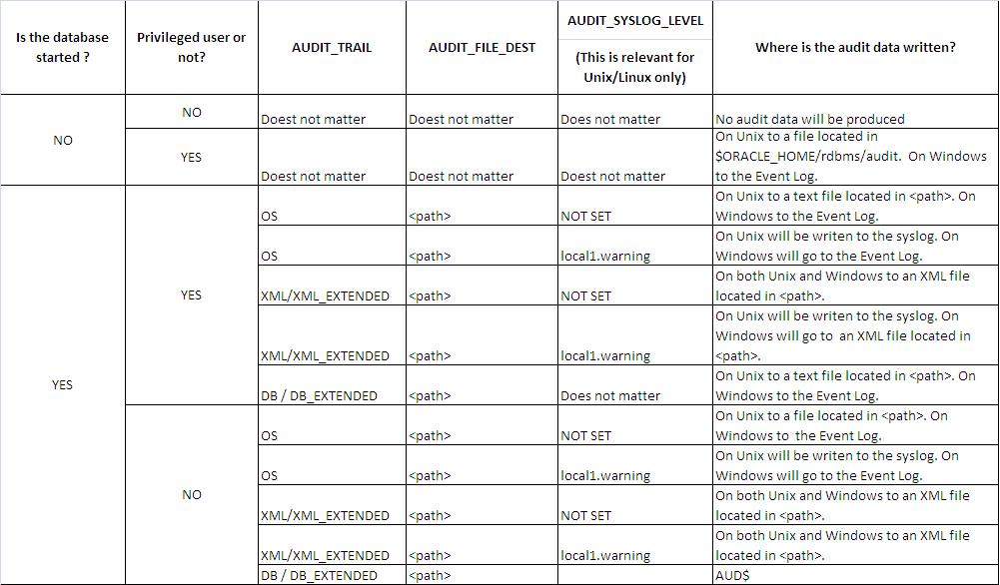

Oracle Audit AUD$ 增长过大异常处理
某天突然发现一个 Oracle 数据库中 system 表空间大小有点异常，经过统计，原来是启用了 Oracle 的 Audit 功能，并将审计的信息存放在系统表空间。
数据文件大小
[[email protected] DEV]$ ll -h
total 11G
-rw-r-----. 1 oracle oinstall 9.8M Mar 28 09:56 control01.ctl
-rw-r-----. 1 oracle oinstall 101M Mar 28 09:03 example01.dbf
-rw-r-----. 1 oracle oinstall 2.0G Mar 28 09:56 oa_data01.dbf
-rw-r-----. 1 oracle oinstall 2.0G Mar 28 09:55 oa_index01.dbf
-rw-r-----. 1 oracle oinstall 2.0G Mar 28 09:21 oa_temp01.dbf
-rw-r-----. 1 oracle oinstall 51M Mar 28 08:19 redo01.log
-rw-r-----. 1 oracle oinstall 51M Mar 28 08:58 redo02.log
-rw-r-----. 1 oracle oinstall 51M Mar 28 09:56 redo03.log
-rw-r-----. 1 oracle oinstall 51M Mar 28 08:19 redo11.log
-rw-r-----. 1 oracle oinstall 51M Mar 28 08:58 redo12.log
-rw-r-----. 1 oracle oinstall 51M Mar 28 09:56 redo13.log
-rw-r-----. 1 oracle oinstall 1001M Mar 28 09:55 sysaux01.dbf
-rw-r-----. 1 oracle oinstall 5.2G Mar 28 09:56 system01.dbf
-rw-r-----. 1 oracle oinstall 30M Mar 28 05:56 temp01.dbf
-rw-r-----. 1 oracle oinstall 106M Mar 28 09:55 undotbs01.dbf
-rw-r-----. 1 oracle oinstall 5.1M Mar 28 09:03 users01.dbf
从以上输出可用看出，system01.dbf 大小为 5.2G，相比其他数据文件，有点不正常。
表空间使用统计
SELECT DS.OWNER,
DS.SEGMENT_NAME,
DS.SEGMENT_TYPE,
(SUM(BYTES) / 1024 / 1024) "SEGMENT_SIZE(MB)",
MIN(UPPER('&tablespace')) "TABLESPACE"
FROM DBA_SEGMENTS DS
WHERE DS.TABLESPACE_NAME = UPPER('&tablespace')
GROUP BY DS.OWNER, DS.SEGMENT_NAME, DS.SEGMENT_TYPE
ORDER BY SUM(BYTES) DESC;
OWNER SEGMENT_NAME SEGMENT_TYPE SEGMENT_SIZE(MB) TABLESPACE
1 SYS AUD$ TABLE 4549 SYSTEM
2 SYS IDL_UB1$ TABLE 240 SYSTEM
3 SYS SOURCE$ TABLE 64 SYSTEM
4 SYS IDL_UB2$ TABLE 30 SYSTEM
5 SYS C_TOID_VERSION# CLUSTER 23 SYSTEM
6 SYS C_OBJ#_INTCOL# CLUSTER 19 SYSTEM
7 SYS C_OBJ# CLUSTER 12 SYSTEM
8 SYS I_SOURCE1 INDEX 12 SYSTEM
9 SYS ARGUMENT$ TABLE 11 SYSTEM
10 SYS JAVA$MC$ TABLE 11 SYSTEM
其中 SYS.AUD$表占用 4549MB，大约是整个 SYSTEM 表空间的 90%。AUD$是 Oracle 数据库的审计跟踪表，专门用于存储审计跟踪信息。
异常处理
审计设置
SQL> show parameter audit
NAME TYPE VALUE
---------------------- ----------- ------------------------------
audit_file_dest string /db/oracle/admin/DEV/adump
audit_sys_operations boolean FALSE
audit_syslog_level string
audit_trail string DB
数据库审计是否启用通过参数AUDIT_TRAIL来设置，该参数为静态参数，要使更改生效，必须重启数据库。
在本数据库中，启用了审计，且审计的数据存储在 DB，即表SYS.AUD$中。
清除所有审计数据
SQL> conn /as sysdba
Connected.
SQL> truncate table aud$;
Table truncated.
SQL> alter table aud$ shrink;
alter table aud$ shrink
*
ERROR at line 1:
ORA-10630: Illegal syntax specified with SHRINK clause
The SYSTEM tablespace is created with manual segment allocation and as such it is not possible to run the SHRINK command for the objects that are located within. However, if the AUD$ table is moved to another tablespace (locally managed with automatic segment space management) then it can be shrunk.
It is recommended to use shrink on the AUD$ only during a downtime window, since part of the shrink operation will use incompatible locks.
SQL> begin
2 dbms_audit_mgmt.set_audit_trail_location(
3 audit_trail_type => dbms_audit_mgmt.audit_trail_db_std,
4 audit_trail_location_value => 'USERS'
5 );
6 end;
7 /
PL/SQL procedure successfully completed.
SQL> alter table aud$ enable row movement;
Table altered.
SQL> alter table sys.aud$ shrink space cascade;
Table altered.
SQL> begin
2 dbms_audit_mgmt.set_audit_trail_location(
3 audit_trail_type => dbms_audit_mgmt.audit_trail_db_std,
4 audit_trail_location_value => 'SYSTEM'
5 );
6 end;
7 /
PL/SQL procedure successfully completed.
查看AUD$大小
SELECT DS.OWNER,
DS.SEGMENT_NAME,
DS.SEGMENT_TYPE,
(SUM(BYTES) / 1024 / 1024) "SEGMENT_SIZE(MB)"
FROM DBA_SEGMENTS DS
WHERE DS.SEGMENT_NAME = UPPER('&segment')
GROUP BY DS.OWNER, DS.SEGMENT_NAME, DS.SEGMENT_TYPE;
OWNER SEGMENT_NAME SEGMENT_TYPE SEGMENT_SIZE(MB)
1 SYS AUD$ TABLE 0.125
除了使用TRUNCATE，Oracle 也提供了DBMS_AUDIT_MGMT程序包，可用结合DBMS_SCHEDULE定期清理过期的审计信息。具体用法参见Auditing Enhancements in Oracle Database 11gR2。
关于审计
Concepts and Overview
Database auditing is the process of recording, monitoring and reporting of the actions performed on a database. It allows the security auditors to observe whether the database users are using the database according to the established policies and that there are no policy violations. Database Auditing facilitates the analysis of the database activity patterns/trends and it can help in the process of gathering the historical data about a particular database user or activity.
One can use standard auditing to audit SQL statements, privileges, schemas, objects, and network and multitier activity. Alternatively, one can use Fine Grained Auditing (available only in Enterprise Edition) to monitor specific database activities based on factors such as actions on a database table or times when those activities occur. FGA is very flexible since the audit_condition can reference a PL/SQL function that will control whether the audit record is produced or not.
Reasons for using auditing include:
- Enabling future accountability for current actions
- Deterring users (or others, such as intruders) from inappropriate actions based on their accountability
- Investigating, monitoring, and recording suspicious activity
- Addressing auditing requirements for compliance
Auditing Installation
The database standard auditing is a feature available by default in all the database editions.
Configuration and Administration
To use auditing one must first enable it and then define exactly what must be audited. The audited actions are recorded either in the SYS.AUD$ table or in operating system files.
Enabling Auditing
The auditing is enabled by setting the AUDIT_TRAIL parameter to a value different than NONE followed by a restart of the database. The following table presents all the possible legal values for the AUDIT_TRAIL parameter:
NONE：Auditing is disabledDB：The auditing is enabled and the audit data is written to theSYS.AUD$tableDB_EXTENDED：Behaves as DB but also populates theSQL_TEXTandSQL_BINDcolumnsOS：The auditing is enabled. On Unix the audit data is written to text files which are located in the directory specified viaAUDIT_FILE_DEST. On Windows the audit data will be sent to the Event Viewer.XML：The auditing is enabled and the audit data is written to XML files which are located in the directory/folder specified viaAUDIT_FILE_DEST. This is the case for Windows as well.XML_EXTENDED：Behaves as XML but also populates theSQL_TEXTandSQL_BINDtags
As seen in the above table the location where the audit data is sent to is controlled by the AUDIT_TRAIL parameter. When this parameter is set to OS, XML or XML_EXTENDED the exact location of the audit data is controlled by AUDIT_FILE_DEST and AUDIT_SYSLOG_LEVEL. Other factors that influence the exact location for the audit data are :
- the status of the database (started or shutdown)
- whether the user running the audited event is a privileged user or not
The following table shows what will happen when using different combinations for these parameters/factors:
